Women should not have to lose themselves to lead.
Behind the competence, confidence and achievements are often invisible pressures — family expectations, caregiving, societal judgement, workplace demands and the constant call to remain strong. WILWIN gives women a safe space to pause, reconnect, heal, grow and lead with wholeness.
- Reconnect with themselves
- Rewire unhealthy patterns
- Realign with values and purpose
- Re-energize for sustainable leadership
The woman behind the position.
The Women in Leadership Wellness Initiative (WILWIN) is a Nigerian nonprofit organization dedicated to advancing the mental, emotional, psychological and leadership wellbeing of women in leadership and emerging women leaders.
We recognize that women do not lead in isolation. They lead while navigating families, careers, businesses, political environments, workplaces, communities and societal expectations — intersecting responsibilities that can create enormous psychological pressure, often hidden behind outward success.
We create safe and intentional spaces where women can develop emotional intelligence, strengthen resilience, build healthy relationships, access psychosocial support, develop leadership capacity and grow without losing their identity, values or wellbeing — through mental health, leadership development, research, advocacy, mentorship and community building.

Why WILWIN was born
"A woman should be able to rise without losing herself in the process."

WILWIN was born from lived experience. Our founder's journey through corporate and political leadership exposed her to realities that many women experience but rarely discuss openly.
Women are often expected to be competent but not intimidating; strong but not emotional; ambitious but not threatening; successful but still available to everyone; independent but socially acceptable. They are expected to lead organisations, raise families, care for others, navigate relationships and meet societal expectations — often simultaneously.
WILWIN was created from the conviction that women's leadership conversations must include the woman herself. We want a leadership culture where women can lead with strength and softness, competence and compassion, confidence and emotional intelligence.
The people behind WILWIN

Dr. Chinaemerem Nnenna Iwuanyanwu
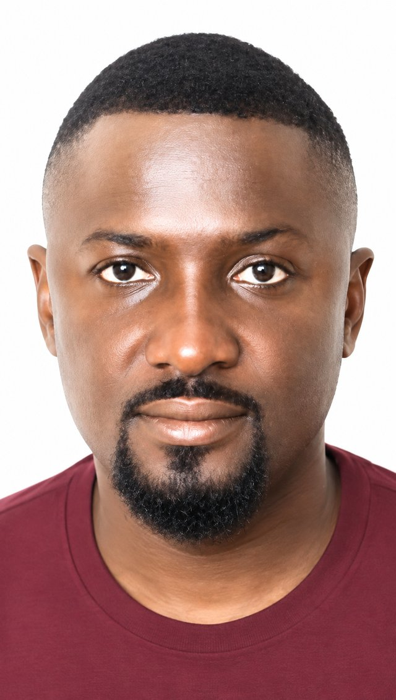
Hon. Clement Dara
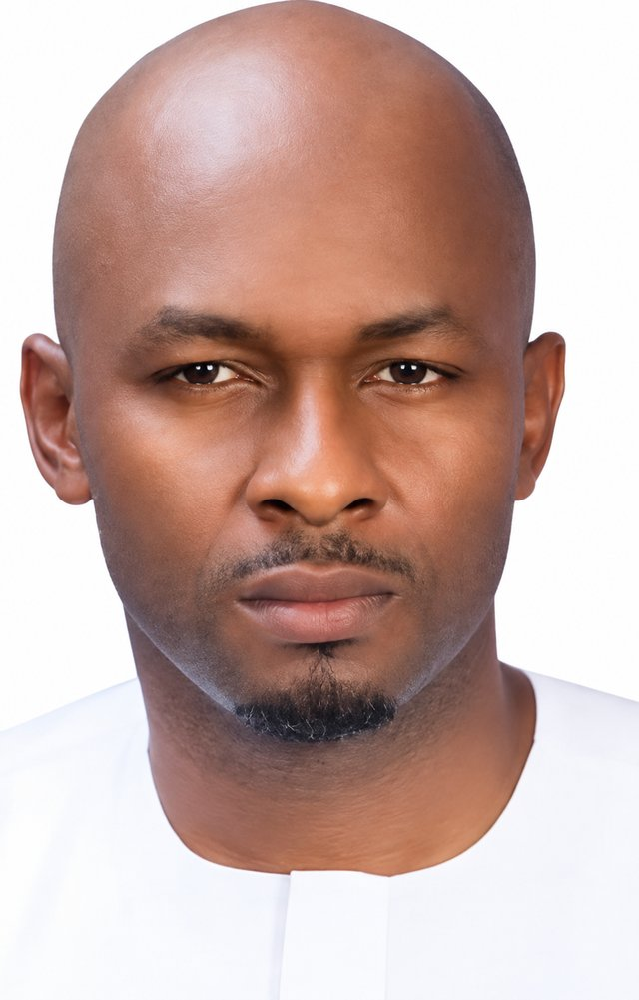
Hon. Ndubisi Obi
Hon. Success Onyeze
A society where women leaders thrive.
To build a society where women leaders thrive with healthy minds, emotional resilience, mutual trust and shared commitment to collective progress.
Wellbeing at the centre of leadership.
To strengthen women in leadership by providing mental health advocacy, therapeutic support, leadership education, research and platforms that foster collaboration, emotional intelligence, and sustainable personal and professional growth.
Six interconnected areas of work
We help women understand and manage the emotional and psychological pressures associated with leadership and everyday life.
We equip women with the knowledge, skills and emotional intelligence required to lead effectively and sustainably.
We create pathways for emerging women leaders to learn from experienced women and prepare for leadership.
We generate and document knowledge on women's mental wellbeing, leadership experiences and social realities.
We advocate for healthier, safer and more gender-responsive environments across workplaces and institutions.
We create spaces where women can connect, support one another and build relationships based on trust.
Ways to walk with WILWIN
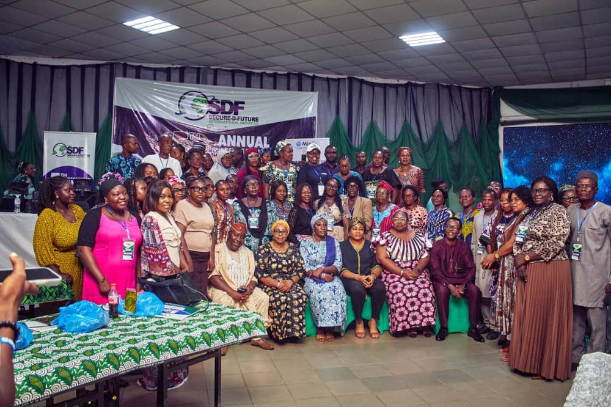
WILWIN Wellness Webinars
Monthly virtual conversations providing women with accessible opportunities to discuss mental health, emotional wellbeing, relationships, leadership and personal growth.
Join the Next Webinar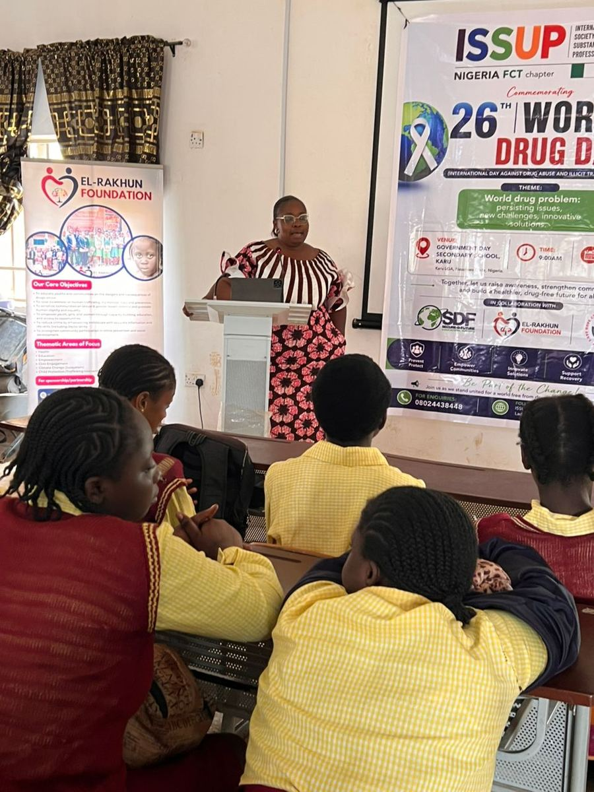
WILWIN Intensive Wellness Programme
A structured six-week wellness experience designed to help women pause, reflect, reconnect with themselves and develop practical tools for sustainable wellbeing.
Register Your InterestWILWIN Women's Leadership Wellness Retreats
Intentional spaces for women to step away from the noise of everyday responsibilities, reflect deeply, reconnect with themselves and engage in meaningful conversation with other women.
Reconnect. Rewire. Realign. Re-energize.

WILWIN Emerging Women Leaders Fellowship
A leadership development and mentorship pathway designed to nurture the next generation of women leaders — combining leadership education, mentorship, emotional intelligence, mental wellness, networking and leadership projects.

WILWIN Leadership Wellness Summit
Our forthcoming summit will bring together women leaders, mental health professionals, policymakers, researchers, development partners and other stakeholders to examine the intersection of women, leadership and wellbeing.
Eight wellness & leadership pillars
Emotional Wellness
Emotional regulation, resilience and stress management.
Leadership Confidence
Self-worth, confidence, decision-making and authentic leadership.
Healthy Relationships
Trust, collaboration, communication and constructive conflict resolution.
Psychological Safety
Safe expression, confidentiality, respect and freedom from harmful judgement.
Identity & Purpose
Values, identity, purpose and the ability to lead without losing oneself.
Mental Health Support
Counselling, therapy, psychosocial support and appropriate referrals.
Growth & Learning
Mentorship, leadership education, continuous learning and personal development.
Advocacy & Systems Change
Gender-responsive environments, inclusive policies and institutional change.
For individuals, organizations and institutions
Counselling Services
Professional counselling support addressing emotional, relational, personal and leadership-related concerns.
Therapy Sessions
Structured therapeutic support delivered within appropriate professional and ethical boundaries.
Training & Capacity Building
Customized programmes for women leaders, organizations, institutions and teams.
Training Workshops
Interactive workshops addressing leadership wellness, emotional intelligence and healthy relationships.
Moderating & Facilitation
Professional moderation and facilitation for conferences, panels, webinars and strategic conversations.
Leadership Wellness Programmes
Customized wellness interventions for organizations supporting women in leadership.
Women across every leadership context
We also work with organizations and institutions seeking to build healthier and more inclusive environments for women.
We address the woman behind the leadership
Many leadership programmes focus on competence. Many women's programmes focus on empowerment. Many mental health programmes focus on illness. WILWIN brings these conversations together.
Human-centred
We see the woman before the position.
Trauma-informed
We recognize that experiences shape how people lead, relate and respond.
Evidence-informed
We promote research, learning and responsible practice.
Confidential
We respect privacy and professional boundaries.
Collaborative
Women achieve more when they build one another rather than compete destructively.
Sustainable
We promote leadership that can be maintained without sacrificing wellbeing.
What is not measured is easily ignored.
We conduct and support research examining women's lived experiences and translating them into evidence that can inform programmes, policy and institutional practice.
The Woman Behind the Economy
Women's Mental Wellbeing and Its Economic Cost on the Global Economy — A Nigerian Case Study. A forthcoming anthology bringing together mental health professionals, women leaders, policymakers, researchers and economists.
Changing the conversation
We believe women's mental wellbeing should not be treated as an afterthought.
When women are psychologically well, families, organizations, communities and economies are stronger.
Testimonials
Featured activities
This section will grow continuously as WILWIN implements programmes.
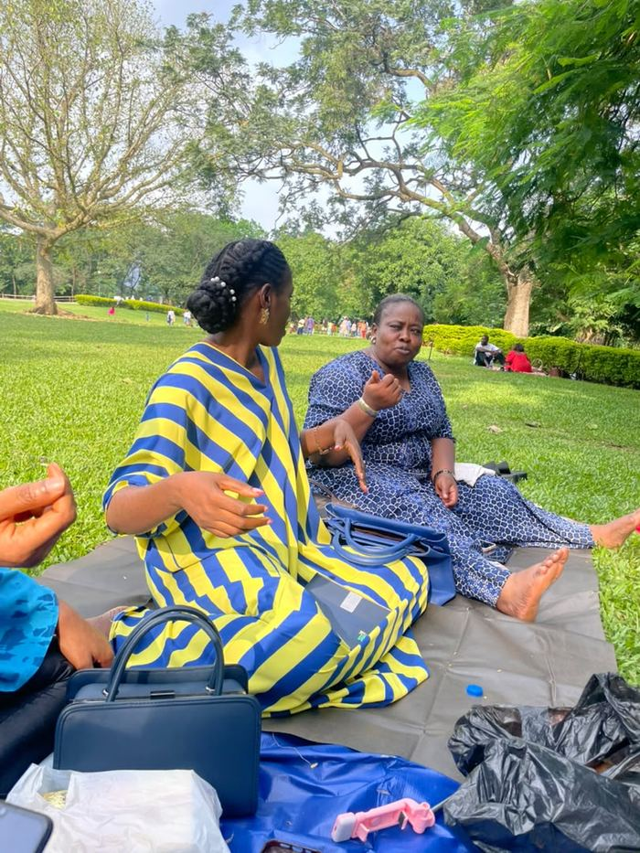
Women's Wellness Hangout — Millennium Park, Abuja
An intentional gathering where women connected, reflected and explored themes around personal wellness and leadership.
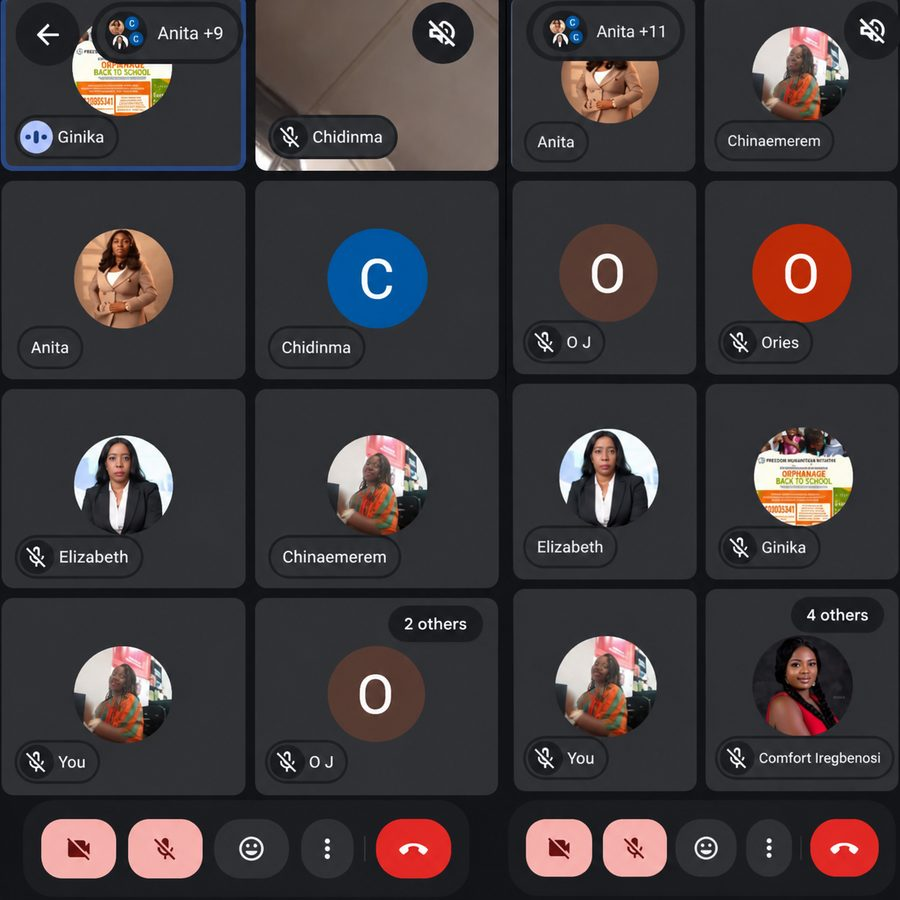
WILWIN Virtual Wellness Meetups
Online spaces for women to reconnect, rewire, realign and re-energize.
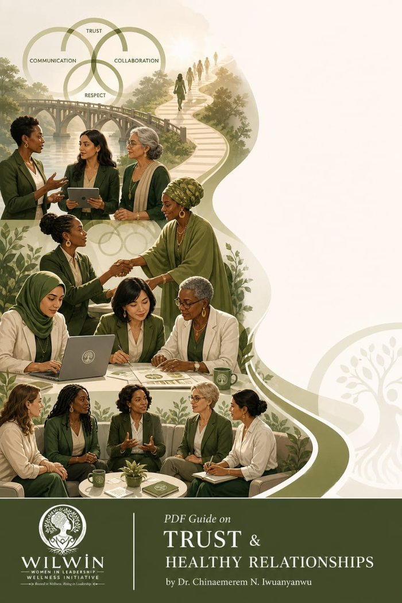
Trust & Healthy Relationships Guide
A practical resource exploring trust, collaboration, communication and healthy relationships among women.
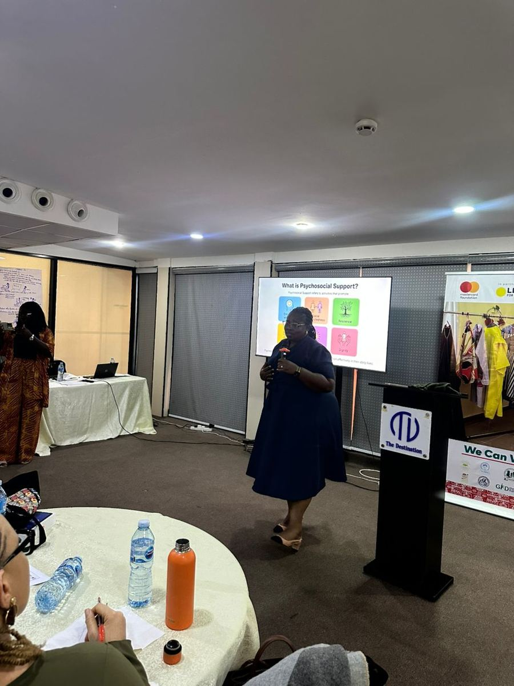
Women in Leadership Wellness Webinars
Monthly conversations addressing the psychological and emotional realities of women in leadership.
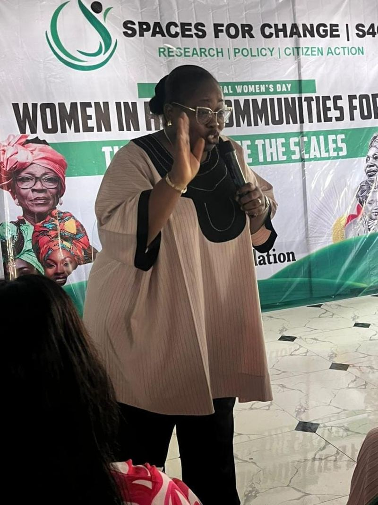
The Warmth Initiative — Clothing & Menstrual Hygiene Drive
A community outreach spreading warmth through a clothing drive, skills acquisition and menstrual hygiene education.

World Drug Day Awareness — ISSUP Nigeria FCT
Raising awareness and building community resilience around substance abuse prevention with students and stakeholders.
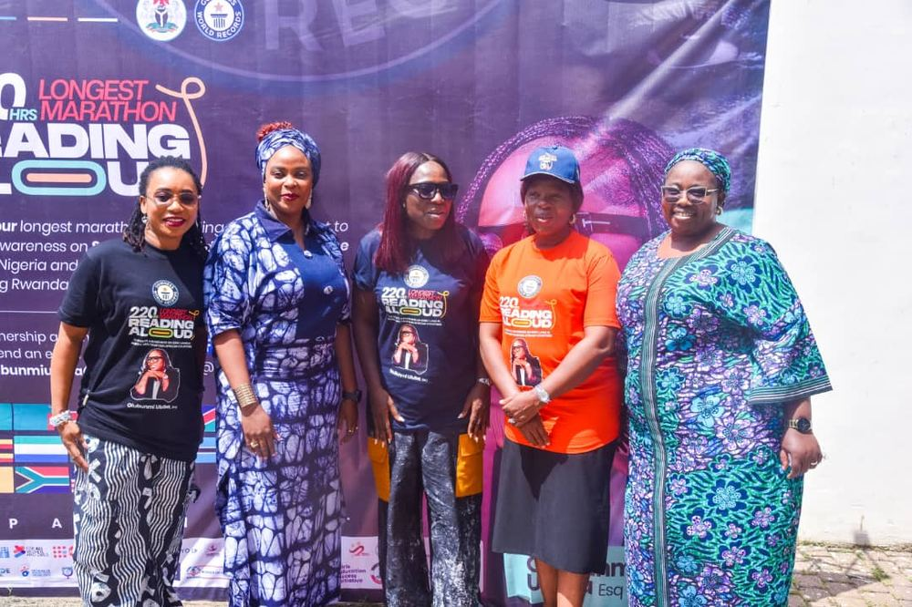
220Hrs Longest Marathon Reading Aloud
Supporting girls' education advocacy alongside partner organizations working across Nigeria and beyond.
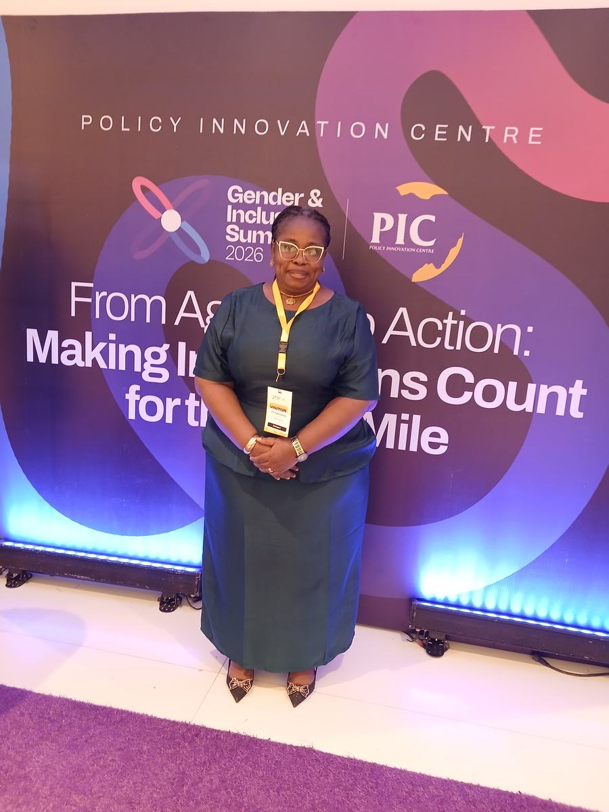
Gender & Inclusion Summit 2026 — Policy Innovation Centre
Contributing to national conversations on turning gender-inclusion ambition into action.
Moments from the WILWIN community
A look at our programmes, retreats, outreach and the women who make WILWIN's work possible. Select any photo to view it larger.
Frequently asked questions
Our programmes primarily serve women in leadership and emerging women leaders. Specific programmes may have additional eligibility criteria.
No. We welcome women from diverse leadership contexts including business, entrepreneurship, civil society, academia, public service, professional practice and community leadership.
Yes. WILWIN provides counselling and therapeutic support within appropriate professional, ethical and referral frameworks.
Yes. Confidentiality is a fundamental principle of our professional practice, subject to applicable ethical and legal limitations, including circumstances involving serious risk of harm.
No. WILWIN is not an emergency psychiatric facility. Where a situation requires specialized or urgent clinical intervention, appropriate referral pathways will be activated.
Yes. We welcome strategic partnerships with government institutions, NGOs, businesses, academic institutions, professional bodies and development organizations whose values align with our mission.
Yes. We can design customized training, wellness, leadership and capacity-building programmes based on an organization's needs.
You can participate in our programmes, partner with us, support our research, sponsor initiatives, become a mentor, volunteer your expertise or collaborate with us on projects.
Let's build healthier leadership together
No organization can transform women's wellbeing alone. WILWIN welcomes strategic partnerships with organizations and institutions committed to creating healthier environments for women to lead and thrive.
There is a place for you at WILWIN
Join the Community
Connect with women who believe that leadership and wellbeing should go together.
Become a Mentor
Support emerging women leaders with your experience and wisdom.
Become a Partner
Collaborate with us to create meaningful programmes and interventions.
Support Our Work
Help us expand access to leadership wellness and mental health support.
Share Your Story
Contribute your voice to the growing conversation on women's wellbeing.
Let's start a conversation
Whether you are a woman in leadership, an emerging leader, organization, potential partner, researcher or supporter — we would love to hear from you.
You don't have to lead alone.
You can be ambitious and emotionally healthy. You can be strong and ask for help. You can lead others and take care of yourself. You can succeed without losing yourself.
At WILWIN, we believe the future of women's leadership is not simply about more women at the table. It is about ensuring that the women at the table are healthy enough, supported enough and connected enough to thrive.